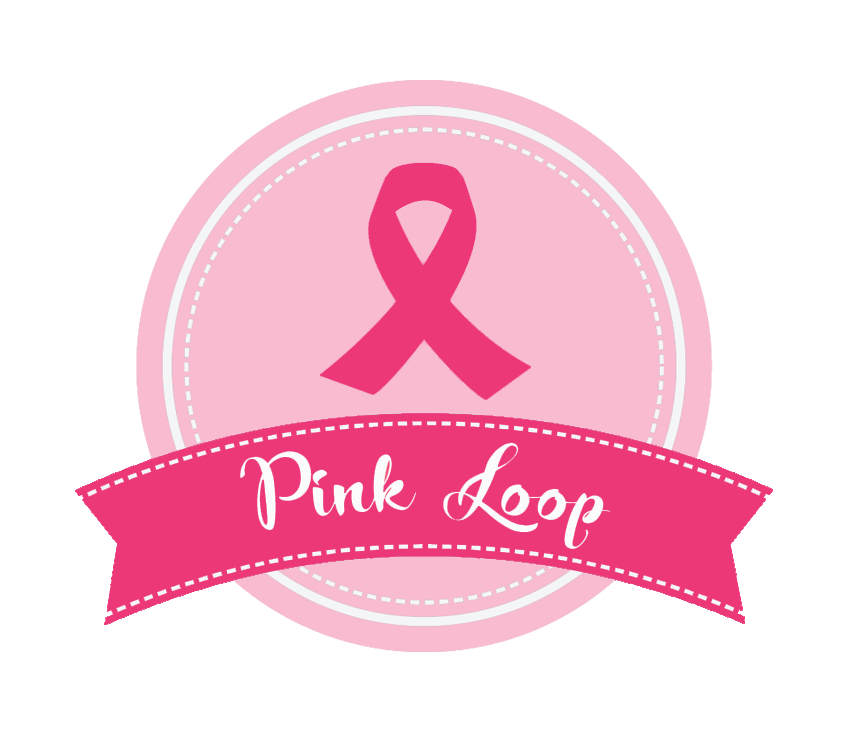

Sobre
Pink Loop é o trabalho final de um grupo de estudantes do Curso Técnico em Informática Integrado ao Ensino Médio do Câmpus Xanxerê do Instituto Federal de Santa Catarina para obtenção do diploma de Técnico em Informática. O trabalho é o desenvolvimento de um aplicativo móvel voltado para o auxílio no acompanhamento do tratamento contra o câncer de mama.
Equipe
Orientador Prof. Ms. Jackson Meires Dantas Canuto
Estudante Clara Noemi Pithon da Silva
Estudante Thainá Ferrari Cortina
Estudante Beatriz Chitolina
Orientadora Profª. Drª. Luciane Belmonte Pereira

Estudante Leonardo de Oliveira Jaques
Estudante Morgana Rodrigues
Estudante Fabiana Aparecida da Silva Ferreira
Câncer de mama
O câncer de mama é uma doença causada pela multiplicação desordenada de células da mama. Esse processo gera células anormais que se multiplicam, formando um tumor. Há vários tipos de câncer de mama, por isso, a doença pode evoluir de diferentes formas. Alguns tipos têm desenvolvimento rápido, enquanto outros crescem mais lentamente. Esses comportamentos distintos se devem a característica próprias de cada tumor.
Sinais e sintomas
O câncer de mama pode ser percebido em fases iniciais, na maioria dos casos, por meio dos seguintes sinais e sintomas: nódulo (caroço) fixo e geralmente indolor é a principal manifestação da doença, estando presente em cerca de 90% dos casos quando o câncer é percebido pela própria mulher. Pele da mama avermelhada, retraída ou parecida com casca de laranja Alterações no bico do peito (mamilo). Pequenos nódulos nas axilas ou no pescoço e saída espontânea de líquido anormal pelos mamilos.
Como prevenir?
Cerca de 30% dos casos de câncer de mama podem ser evitados com a adoção de hábitos saudáveis como: praticar atividade física, alimentar-se de forma saudável, manter o peso corporal adequado, evitar o consumo de bebidas alcoólicas, amamentar e evitar uso de hormônios sintéticos como anticoncepcionais e terapias de reposição hormonal.
Diagnóstico
Um nódulo ou outro sintoma suspeito nas mamas deve ser investigado para confirmar se é ou não câncer de mama. Para a investigação, além do exame clínico das mamas, exames de imagem podem ser recomendados, como mamografia, ultrassonografia ou ressonância magnética. A confirmação diagnóstica só é feita, porém, por meio da biópsia, técnica que consiste na retirada de um fragmento do nódulo ou da lesão suspeita por meio de punções (extração por agulha) ou de uma pequena cirurgia. O material retirado é analisado pelo patologista para a definição do diagnóstico.
Tratamento
Muitos avanços vêm ocorrendo no tratamento do câncer de mama nas últimas décadas. Há hoje mais conhecimento sobre as variadas formas de apresentação da doença e diversas terapêuticas estão disponíveis. O tratamento do câncer de mama depende da fase em que a doença se encontra (estadiamento) e do tipo do tumor. Pode incluir cirurgia, radioterapia, quimioterapia, hormonioterapia e terapia biológica (terapia alvo). Quando a doença é diagnosticada no início, o tratamento tem maior potencial curativo. No caso de a doença já possuir metástases (quando o câncer se espalhou para outros órgãos), o tratamento busca prolongar a sobrevida e melhorar a qualidade de vida.
Objetivo
O aplicativo conta com um cadastro de consultas e medicamentos, formas de prevenção primária do câncer no formato de dicas de saúde, além de motivação pessoal no formato de frases e informações relacionadas ao câncer de mama. Seu principal diferencial é um banco de perucas, que visa a melhora da autoestima de mulheres em tratamento, no qual seja possível visualizar e favoritar perucas com suas respectivas informações para serem posteriormente emprestadas.
BANCO DE PERUCAS
CÂNCER DE MAMA
MEDICAMENTOS
MOTIVE-ME
PERUCAS FAVORITAS
DICAS DE SAÚDE
CONSULTAS
AUTOEXAME
Recursos
A ideia do aplicativo surgiu por meio do tema proposto para o trabalho, que é a tecnologia assistiva, uma área do conhecimento que engloba estratégias que visam dar mais autonomia, independência e qualidade de vida a pessoas com deficiência, incapacidades ou mobilidade reduzida. Os recursos para o desenvolvimento do aplicativo são diversos, estão sendo utilizadas tecnologias como o Firebase, Expo, React Native e o NativeBase.